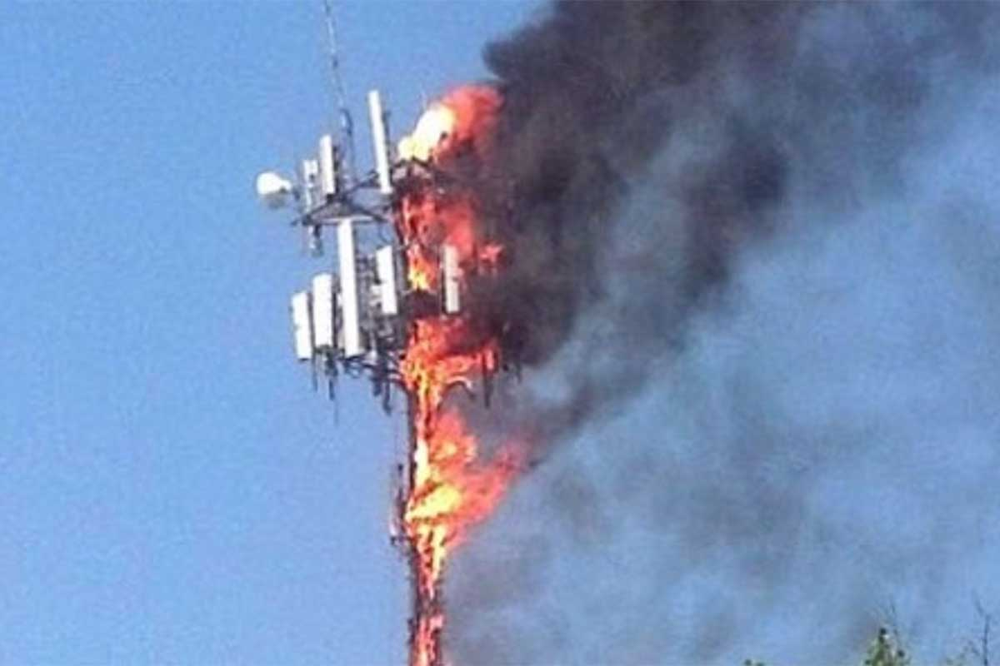

5G Towers Burned by Modern Don Quixotes
By Gabryel D
Two Florida men were caught burning down 5g towers in Orlando last week, according to local police. Claiming to be knight and squire, they attacked the towers with lances, poured gasoline in the holes, and burned them from the inside.
"The towers are actually giants that want us to suffer from 5G radiation!" wrote Dan "Q" Hattie, maintainer of the group's Facebook Page. "Those monsters placed them there to give us the plague, to make us weak! But we protect and save the people of Orlando."
Orlando citizens are not appreciating the protection, however. “I’m absolutely outraged, absolutely disgusted, that people would be taking action against the very infrastructure that we need to respond to this health emergency,” said Dr. Stephen Powis, an emergency room physician. "We have enough misinformation about vaccines and masks in Florida. We don't need this!"
Hattie and his accomplis, had been posting about their quests via a popular Facebook Group for weeks before being intercepted. The posted image at left represents a "Scorpion Giant," monsters the two men claim are invisible to "all but the pure of heart."
Misinformation is indeed a real public health emergency. "The false info has confused the people of America, who mix fiction with reality", added Dr. Powis, a visiting British physician responding to emergency calls for support. Similar events have been occurring in Europe, Powis reported in a story covered by ABC news: "5G Towers are being connected to Covid-19 by Russian trolls. People are scared and don’t know who to trust."
After burns sustained from their latest tower attack, the two men are recovering under custody in Orlando General Hospital. They have also tested positive for Covid, but are refusing treatment, claiming it to be a government conspiracy.
Despite the harm they have done to themselves and others, the confused men have received outpourings of support and aid. Medical and legal expenses are being covered by donations from the readers of their Facebook Group. Though most do not live in Florida and are not threatened by the sorcerors and monsters, they applaud the efforts.
"The world will be better for this," wrote one Facebook donor. “I hope the 5G Industry is exposed for their heinous crimes. They have caused many innocent people to suffer.”